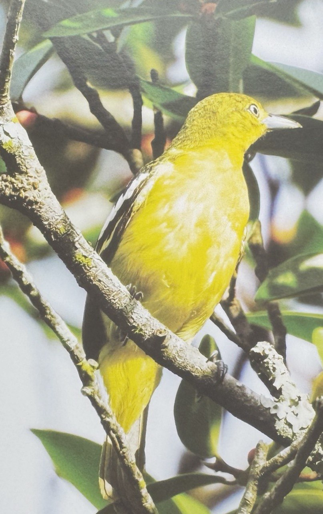

FRIM LIBRARY WEEKLY QUIZ
Week 04 - Question 02

Which of the following describes the plumage of the common iora?
Aegithina tiphia, commonly known as common iora or kelicap kunyit, is a bird found in open forests and plantations.
Week 04 - Question 02

Aegithina tiphia, commonly known as common iora or kelicap kunyit, is a bird found in open forests and plantations.